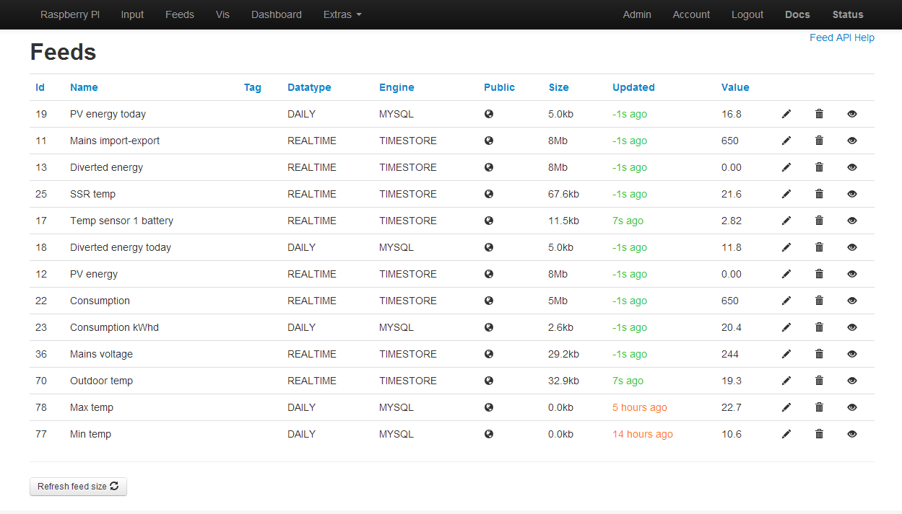

What is the roadmap for implementing Timestore in stand alone systems? By that I mean if the emoncms git files are updated to Timestore, will existing data be updated in a similar manner to the way in which emoncms.org is currently updating.
Paul
Archived Forum |
|
TimestoreSubmitted by Paul Reed on Sat, 03/08/2013 - 13:32What is the roadmap for implementing Timestore in stand alone systems? By that I mean if the emoncms git files are updated to Timestore, will existing data be updated in a similar manner to the way in which emoncms.org is currently updating. Paul » |
Re: Timestore
Hello Paul, Thanks for asking. Yes I see the upgrade process working in much the same way. Using the same interval selector interface and then running the conversion script. In a similar way to the emoncmsorg conversion process it would be a matter of using a transitionary emoncms version which allows use of mysql and timestore feeds before moving later to a timestore only version. It still needs a little work to make it an easy conversion, I will be doing a bit of work on it in the next few days.
Re: Timestore
great to hear that Trystan, I'm a Business Intelligence Analyst at an insurance company so I'm used to work with loads of data in a datawarehouse (datavault by Dan Linstad method). So I like to convert my emoncms to a bit more "bigdata" way than the present mysql DB.
Re: Timestore
Thanks Trystan. My database is pretty small at the moment, and everything loads quickly, but look forward to the conversion for the sake of data longevity.
Paul
Re: Timestore
I am pretty desperate to have this. Firstly, MySQL will likely be a PITA to backup off the RPi I am running it on. My database is 2.2GB, which has been collecting power & temperature data since December 2012. I have previous data in RRDB, which I would like to import, however am concerned r.e. existing size.
Re: Timestore
Nick, just wondering how long it will take your RPi to run the conversion for a 2.2Gb database. That's a lot of data to munch through!
Paul
Re: Timestore
Ok its ready to try, I've written up installation steps in the readme of the transitionary emoncms branch (Called emoncmsorg - as its what is running on emoncms.org) here:
https://github.com/emoncms/emoncms/tree/emoncmsorg
The timestore integration is currently a bit rough around the edges with things like delete feed not yet implemented. I have so far focused on getting feed create, insert_data and get_data to work.
I look forward to hearing what you guys think of it,
thanks,
Trystan.
Re: Timestore
Yeah, I'm thinking of converting on a different machine. I may even consider migrating off the pi, and just relying on the pi sending the readings via MQTT (which I have running as a plugin). A 2.2GB database would probably take some time :)
Re: Timestore
Just a heads up: Paul Reed and I have been troubleshooting the transitionary timestore emoncms branch on github here:
https://github.com/emoncms/emoncms/issues/91
Re: Timestore
Hello Trystan,
I made the conversion to timestore -- the increase in speed is impressive indeed! My database was small - only 18 days of data - so the conversion on my Pi took less than 10 minutes. Dashboard response when displaying a week or month of data is NICE!
Bill Thomson
Re: Timestore
Thanks Bill, that's great to hear! Its amazing isn't it being able to zoom through the historical data at that speed. Credit to Mike Stirling for creating timestore
I realize I missed adding in a needed change to raspberrypi_run.php to make it work, are you using the python gateway? Is data coming in ok?
I've created a branch of the raspberrypi module that is compatible with the emoncmsorg branch of emoncms that fixes the issue with raspberrypi_run.php, see discussion with Paul Reed here: https://github.com/emoncms/emoncms/issues/91
Re: Timestore
Trystan when do you think timestore will be good to merge in with the master branch (i.e. when will timestore replace mysql)?
Re: Timestore
Tim, are you upgrading or is it a new installation?
The rollout of Timestore is being carefully managed by Trystan & Glyn to ensure a smooth transition and prevent data loss, and therefore as I understand it, the upgrade process comes in 2 parts;
So in short, if you have an existing system and want to upgrade, you need to install the Transitionary version first, as there will not be a Master git pull to upgrade existing systems.
I've just upgraded mine and it's well worth the effort as the loading speed difference is phenomenal, like the difference between dial-up and broadband!
The upgrade process is not difficult, but a few things that I learnt in doing so was;
Paul
Re: Timestore
Hi Paul/Trystan,
I did a db backup on from my active instance and ran emoncms (with timestore) on another server instance.. all good until I hit the export.php step. This is the response from export.php
Any ideas? I suspect this has something to do with my feeds... but no idea what
Tim
Re: Timestore
Have you submitted the feeds to the conversion queue?
If not, go to feeds, and you'll see the 'conversion page' link in the blue header, add your feeds, and re-run export.php
Also check that Timestore is actually running;
should return the process ID number, but if not, start the Timestore daemon by;
Paul
Re: Timestore
I have a question to ask with regards to timestore which I could not find reading through the blog entries. It appears that timestore speeds up database queries by using the regular time index as the database table index, allowing you to know what entry to look for index-wise when you know the time you are looking for. Does this system have the capability to take in time values off of the regular series? For example, if you shut your system down for an hour, when you start up, how does the system handle that missing data / time jump? Can you add extra points in if needed? My main concern is setting up a system that relies so heavily on the regular interval between data writes, that any misses / differences on that cause it to have major issues later on.
Forgive me if I am asking a question that is answered elsewhere. BTW, the link to the timestore page on the first blog entry is no longer valid... Thanks for your continued contributions.
Dan
Re: Timestore
Hello Dan, good question, the way it works is that it padds out the missing data with NAN entries. So if a monitor goes down for a month the first datapoint it posts will cause timestore to fill that month with NAN values at the same interval rate. This may sound like a waste of disk space but because timestore does not store timestamps your saving more disk space than you use up from occasional outages when its logging normally as it where.
The thought occurred to me that one could have a solution for longer term outages, where if a new datapoint comes in 6 months after the last one rather than fill that 6 months up it could log a new partition with a second start time to the meta data, not sure how worth it it would be to implement this.
If your logging timestamps (4bytes) and float data values (4bytes) at 10 seconds interval for a year it will use 25228800 bytes (24mb)
With timestore a year of 10s data would use half this ~12mb
The monitor would have to be off for 6 months out of 12 for timestore disk use to equall a method where the timestamp is recorded.
I think the benefit of much quicker query speeds and significantly lower disk space in the majority of cases, outweighs the need to padd out missing values.
Re: Timestore
Trystan,
Thanks for taking the time to explain it. It does sound like a good upgrade and I look forward to being able to implement it on my local server.
Dan
Re: Timestore
Hello Trystan. Thanks for the detailed information. The timestore implementation looks very interesting, the speed is impressive and the average layers is perfect. You wrote missing data is filled with NAN values, is this based on the localtime? and is this done for every missing value? What I mean is if I set the interval to 10 seconds and the next value is added after 20 seconds instead of 10 will there be a NAN between the two values and what happens if the value is added after 19 or 21 seconds?
I'm also wondering about data recovery, is there any way to read the content of the database without timestore?
Re: Timestore
Hello sjee, yes every missing datapoint is filled with a NAN value, Il draw a diagram to illustrate what happens. Its straightforward to read the data directly from the timestore data files. Each datapoint is a 4 byte float stored one after the other. I implemented a timestore feed exporter that uses php to access the data directly not going through timestore: https://github.com/emoncms/emoncms/blob/emoncmsorg/Modules/feed/feed_model.php#L673
Re: Timestore
What happens if I change the sample interval for a feed after logging for some time?
Re: Timestore
I dont think that you can, as the conversion script converts your existing MySQL data to Timestore at the interval which you elect during the conversion process. Once converted, the conversion script is not used again.
If there was a way to later to change the interval, it would surely screw up the timings of your historical data, as there are no time stamps to determine the change of interval.
Paul
Re: Timestore
Easier timestore installation
This will probably get pulled into the main timestore repository soon in some form but until then this simplifies installation quite a bit:
If you already have an installation of timestore the easiest option is probably to rename or delete your current timestore folder and start with a clean install.
This update also has a couple of other benefits:
sudo /etc/init.d/timestore start
sudo /etc/init.d/timestore stop
sudo /etc/init.d/timestore restart
sudo /etc/init.d/timestore status
Another thing to note is that the data values are float as default rather than double.
Re: Timestore
maze42, yes as Paul said as the moment the interval cant be changed. I think it might be good to have a tool at some point to make it possible to re-compile a timestore feed to a longer time interval. I.e say convert a 10s timestore feed to a 30s timestore feed.
Re: Timestore
Trystan, thanks for the above, I upgraded tonight without problem, but how did you get the 'min' function to work OK in emoncms.org ?
It didn't work until about 4 days ago, but now works fine, although no changes have been made to Github for stand alone systems to implement.
Thanks
Paul
Re: Timestore
I dont think I've made any changes to the min, max functions, the process_model.php code is the same on emoncms.org as it is on the repo.
I have just added the full range of intervals to the create feed interval selector box, just pushed that to the repo. I'm going to look now at all the input processes as I know timestore will break several of them.
Re: Timestore
I have 2 functions not working since the Timestore update;
1) The 'min' value no longer works on stand alone systems. On the first input being received, the condition - if ($time_check != $feedtime) correctly copies the current input value to the feed, but on subsequent inputs the feed value drops & remains at zero (0).
Emoncms.org also displayed the same problem initially, but began working at the beginning of last week (also noticed and reported by another member).
2) The event module immediately errors and the error message below is displayed on the screen;
/var/www/emoncms/Modules/feed/feed_model.php on line 23
Notice: Undefined variable: timestore in /var/www/emoncms/Modules/feed/feed_model.php on line 26
Paul
Re: Timestore
Just done a little work on the process list interface, when selecting a input process that creates 'daily' type data the interval selector is no longer shown. I've also refactored the code a bit. Commit details are here.
Paul: Il look into the event module issue and test the min, max processors see if I can work out whats going wrong.
Re: Timestore
Hi
I followed Trystan's instructions to install Timestore. Seemed to install OK with no error meassages but I did not get an adminkey at the end of the process. I then ran sudo /etc/init.d/timestore status and timstore reported not running. I tried sudo /etc/init.d/timestore start but it did not start so I assumed the install failed. I then saw Paul's message suggesting
cd /home/pi/timestore/src
sudo ./timestore
This has started timstore. Is there a command I can now use to retrieve the adminkey?
Re: Timestore
Ian, I believe that you can find the admin key via;
Paul
Re: Timestore
Many Git changes tonight...
The Github 'emoncmsorg' beta has now been merged into the 'master', so Timestore is now the official emoncms standard.
Paul
Re: Timestore
Updated emoncms this morning to the new 'master' which cured nearly all my issues after transferring to Timestore last week.
The one problem I have is with the 'Event' module where I get the following error message:
line 24
Notice: Undefined variable: timestore_adminkey in /var/www/emoncms/Modules/feed/feed_model.php on line 34
Apart from this, thanks for all the work that has gone into this release.
Bob
Re: Timestore
Hi Bob, have you updated the event module to the latest commit?
Its good to hear that this latest version has made such a difference.
Paul
Re: Timestore
Hi everyone! I'm currently using emoncms v5.0 in raspberry system with lighttpd web server. I tried to migrate to emoncms v6 but i've problem with timestore. I followed the guide in this link https://github.com/emoncms/emoncms but when i try to run timestore....this is the error: CRITICAL:http.c(405): Couldn't start http daemon. I've before stopped lighttpd but same error appears.Someone have the same problem?
Re: Timestore
Hi Paul,
Was certain that I had, but obviously not...
...no error message now, thank you.
Now if only delete feed worked.
Thanks again
Bob
Re: Timestore
cricchetto: i think CRITICAL:http.c(405): could not start should mean either that its already running or that there could be a firewall in the way. What does running this print out:
sudo /etc/init.d/timestore status
Re: Timestore
Now if only delete feed worked. -
Bob, I had a similar problem deleting feeds last night, an although the MySQL feed tables had been deleted, their feed numbers were still present in the feeds table, which I removed manually.
I put the issue down to some development work I had ongoing, but since you are having the same issue I'll check tonight, to make sure it functions OK.
Paul
Re: Timestore
Looks like I put a return in the wrong place in the delete function, it was deleting the actual data but not the feeds table meta entry. Just fixed it and pushed the fix to github
Re: Timestore
Thank you, delete feed now working and all looking good.
Bob
Re: Timestore
The screenshot below, shows the latest changes as of 29/8/13 to the Feeds page.
Main changes here are;
Paul

Re: Timestore
Fantastic!!!!I've rebooted raspberry, and now timestore running correctly!I don't know why, but now work.
Re: Timestore
Hi
Thanks to Paul I now have the timestore admin key.
I am working through the upgrade process. Issued a git pull & edited settings.php and then tried to access my emoncms on the pi. Received the following message.
Can't connect to database, please verify credentials/configuration in settings.php
Error message: Access denied for user 'root'@'localhost' (using password: YES)
I guess I have the password wrong which I had noted as raspberry as per the original instructions. Is there any way to retrieve or check the mysql password?
Regards
Ian
As an afterthought what is the best command to backup the old settings.php which is clearly the first thing I should have done? It may also help the Linux inexperienced if the advice to backup settings.php could be included in the upgrade instructions. The git pull also needs to be issued from /var/www/emoncms and not /var/www. I worked this out when it did not work in /var/www but adding this to the instructions may help others.
Re: Timestore
Ian, I always simply copy the settings.php to a different name;
before editing and renaming default.settings.php
To regain access to MySQL, try http://www.youtube.com/watch?v=Zs1Pz0_gH24
A fresh install (clone) is run from /var/www/ whilst git pulls are always run from within the installation directory, but you are right, it probably needs to be made clearer in the readme.
Paul
Re: Timestore
Paul,
Many thanks. The video taught me a number of useful mysql commands. I got back in by trying all the passwords I might have used and got lucky. I had used my emoncms password by mistake and noted the wrong one!
Backed up settings.php for the future.
Regards
Ian
Re: Timestore
Hi,
Just converted to timestore. All went well, but I'm having some problem visualizing 'daily' feeds.
When I use e.g. the simplezoom visualisation everything works as it should (power and kwhd), so the data is present. However, when I select the zoom visualisation, a lot of data is missing. I used a custom time step of 6s, but as the simplezoom shows all data correctly, I'm not sure it's related to that. I also updated emoncms and all modules to the latest version.
Any suggestions ?
Re: Timestore
Hi
Some progress on conversion. I did not at first get any feeds visible on the convertotimestore page. Eventually I ran an update on the pi and did a reboot. After that I got the feed table and set the intervals (and saved them).
I ran the convert file and got the following error. Have I missed something out of the process? As background information I am running the pi purely as a server. It does not have a wireless module.
pi@raspberrypi ~ $ php /var/www/emoncms/Modules/converttotimestore/convert.php
5 Creating timestore node PHP Fatal error: Call to undefined function curl_init() in /var/www/emoncms/Modules/feed/engine/TimestoreApi.php on line 92
Fatal error: Call to undefined function curl_init() in /var/www/emoncms/Modules/feed/engine/TimestoreApi.php on line 92
pi@raspberrypi ~ $
Regards
Ian
Re: Timestore
Hi Ian,
Seems like you don't have the php5-curl module installed. Could you try installing it with this command:
sudo apt-get install php5-curl
regards,
Roel
Re: Timestore
Hi Peeps.
I guess this timestore doesnt run on windows :(
Time to switch to linux VM??
Re: Timestore
For info - emoncms git master has been updated tonight to fix an issue where the DAILY feeds were not being reset to zero at midnight.
A further bug already reported is that the min/max processes do not create a corresponding MySQL database table, therefor no historical data is stored (Bar Graph will be blank). - Now also fixed
Paul
Re: Timestore
Hi
Thanks Roel, fixed that problem.
Started convert running and got the following:-
pi@raspberrypi /var/www/emoncms $ sudo php /var/www/emoncms/Modules/converttotimestore/convert.php
5 Creating timestore node ok
Start: 1369828872 95 days 100000
Start: 1373833667 48 days 100000
Start: 1377356862 8 days 100000
Start: 1378023878 -0 days 4632
199.69245004654
6 Creating timestore node ok
Start: 1369828973 95 days 100000
PHP Notice: Trying to get property of non-object in /var/www/emoncms/Modules/converttotimestore/convert.php on line 46
Notice: Trying to get property of non-object in /var/www/emoncms/Modules/converttotimestore/convert.php on line 46
86.407195091248
12 Creating timestore node ok
PHP Notice: Trying to get property of non-object in /var/www/emoncms/Modules/converttotimestore/convert.php on line 46
Notice: Trying to get property of non-object in /var/www/emoncms/Modules/converttotimestore/convert.php on line 46
0.0025489330291748
14 Creating timestore node ok
PHP Notice: Trying to get property of non-object in /var/www/emoncms/Modules/converttotimestore/convert.php on line 46
Notice: Trying to get property of non-object in /var/www/emoncms/Modules/converttotimestore/convert.php on line 46
0.0013999938964844
17 Creating timestore node ok
PHP Notice: Trying to get property of non-object in /var/www/emoncms/Modules/converttotimestore/convert.php on line 46
Notice: Trying to get property of non-object in /var/www/emoncms/Modules/converttotimestore/convert.php on line 46
0.0014119148254395
18 Creating timestore node ok
PHP Notice: Trying to get property of non-object in /var/www/emoncms/Modules/converttotimestore/convert.php on line 46
Notice: Trying to get property of non-object in /var/www/emoncms/Modules/converttotimestore/convert.php on line 46
0.0013971328735352
19 Creating timestore node ok
PHP Notice: Trying to get property of non-object in /var/www/emoncms/Modules/converttotimestore/convert.php on line 46
Notice: Trying to get property of non-object in /var/www/emoncms/Modules/converttotimestore/convert.php on line 46
0.0030689239501953
20 Creating timestore node ok
PHP Notice: Trying to get property of non-object in /var/www/emoncms/Modules/converttotimestore/convert.php on line 46
Notice: Trying to get property of non-object in /var/www/emoncms/Modules/converttotimestore/convert.php on line 46
0.0032219886779785pi@raspberrypi /var/www/emoncms $ ^C
pi@raspberrypi /var/www/emoncms $
I have included it in full in case it provides further information.
After this I tried to login to the server and got this message:-
Can't connect to database, please verify credentials/configuration in settings.php
Error message: Can't connect to local MySQL server through socket '/var/run/mysqld/mysqld.sock' (2)
Regards
Ian
Re: Timestore
Ian: since it got as far as the second feed it might suggest that there is an entry for feed 6 in the feeds meta table but not a data table, should there definitely be a data table for feedid 6?
Strange that you cant login afterwards, is mysql still running, can you login to mysql?
mysql -u user -p pass emoncms
Then it might be worth checking if all the tables are there with:
SHOW TABLES;
XaroRSA: I think timestore can be built on windows, I havent done it myself but it should be possible.
Re: Timestore
Hi Trystan.
If you can point me in the direction to compile it on windows I would much appreciate it!
I tried to compile the main c file in my C compiler, but its looking for additional libraries?
Re: Timestore
Hi Paul,
I had the problem where DAILY feeds where not being reset at midnight. Did a git pull on emoncms (and sub directories) after your post on Saturday (which did update something) but still have the same issue.
Feel that I am getting confused over the git update process. Should I be switching to a different version of emoncms on git and then updating or is there something else I am missing.
Bob
Re: Timestore
Bob, yes I still have the same problem too, as the Git pull did not solve the issue.
Trystan is currently trying to fix this and I will post back when a successful update is available.
As far as Git is concerned, you should be now on the 'master' branch, and you can check by running;
from the /emoncms directory.
Paul
Re: Timestore
Hi Trystan,
A reboot of the pi enabled me to log back in to my emoncms.
The result of SHOW TABLES:-
mysql> SHOW TABLES;
+--------------------+
| Tables_in_emoncms |
+--------------------+
| converttotimestore |
| dashboard |
| feed_11 |
| feed_12 |
| feed_13 |
| feed_14 |
| feed_17 |
| feed_18 |
| feed_19 |
| feed_20 |
| feed_5 |
| feed_6 |
| feeds |
| input |
| multigraph |
| rememberme |
| users |
+--------------------+
17 rows in set (0.01 sec)
mysql>
A possible clue to what is amiss. I have 10 feeds if I click on feeds in emoncms. all as listed above.
Feed_5 is now shown as timestore.
If I go into extras and convert to timestore I should presumably see 9 feeds and their calculated interval as feed 5 is already converted.
I don't. I only see 7 feeds, 11 and 13 are missing. The different feature of these 2 feeds is that they are both Datatype DAILY. All the other Datatypes are REALTIME. Is this the cause of the problem?
Regards
Ian
Re: Timestore
That sounds correct, as only REALTIME feeds are converted to Timestore, DAILY feeds stay as MySQL.
Paul
Re: Timestore
Thanks Paul.
Still leaves me unable to convert with the results as reported earlier. I tried a second time with exactly the same problems including being unable to login to emoncms until I rebooted the Pi.
Regards
Ian
Re: Timestore
Just did the conversion process, timestore nodes were created OK, but final command results in the following error:
Tried with a 'sudo' but get the same result, checked in the folder and that php file isn't doesn't exist, 'git pull' shows it to be up to date. All of my feeds are recording but aren't showing historical data and size of all feeds (both MySQL and Timestore) show as 0.0kb.
Earlier process went well, with following caveats. Had the same problem as Ian regarding
But Pauls cd /home/pi/timestore/src / sudo ./timestore sorted it for me.
Same with the lack of php5-curl in my install, again sorted by Paul's suggestion. Is it worth adding these to the upgrade instructions?
Thanks everyone for your hard work on this.
Re: Timestore
Hi
I tried convert again and got a bit further. Converted another feed and then this time lost connection to MySQL server. Could this be a a timing issue? Also this time I could still log into emoncms. Details below:-
pi@raspberrypi ~ $ sudo php /var/www/emoncms/Modules/converttotimestore/convert.php
6 Creating timestore node ok
Start: 1369828973 96 days 100000
Start: 1373833869 50 days 100000
Start: 1377357015 9 days 100000
Start: 1378140542 -0 days 7673
203.30337285995
12 Creating timestore node ok
Start: 1368211136 115 days 100000
Start: 1369310523 102 days 100000
PHP Warning: mysqli::query(): (HY000/2013): Lost connection to MySQL server during query in /var/www/emoncms/Modules/converttotimestore/convert.php on line 44
Warning: mysqli::query(): (HY000/2013): Lost connection to MySQL server during query in /var/www/emoncms/Modules/converttotimestore/convert.php on line 44
PHP Notice: Trying to get property of non-object in /var/www/emoncms/Modules/converttotimestore/convert.php on line 46
Notice: Trying to get property of non-object in /var/www/emoncms/Modules/converttotimestore/convert.php on line 46
156.70410299301
14 Creating timestore node ok
PHP Notice: Trying to get property of non-object in /var/www/emoncms/Modules/converttotimestore/convert.php on line 46
Notice: Trying to get property of non-object in /var/www/emoncms/Modules/converttotimestore/convert.php on line 46
0.00045013427734375
17 Creating timestore node ok
PHP Notice: Trying to get property of non-object in /var/www/emoncms/Modules/converttotimestore/convert.php on line 46
Notice: Trying to get property of non-object in /var/www/emoncms/Modules/converttotimestore/convert.php on line 46
0.0036118030548096
18 Creating timestore node ok
PHP Notice: Trying to get property of non-object in /var/www/emoncms/Modules/converttotimestore/convert.php on line 46
Notice: Trying to get property of non-object in /var/www/emoncms/Modules/converttotimestore/convert.php on line 46
0.0037479400634766
19 Creating timestore node ok
PHP Notice: Trying to get property of non-object in /var/www/emoncms/Modules/converttotimestore/convert.php on line 46
Notice: Trying to get property of non-object in /var/www/emoncms/Modules/converttotimestore/convert.php on line 46
0.0033249855041504
20 Creating timestore node ok
PHP Notice: Trying to get property of non-object in /var/www/emoncms/Modules/converttotimestore/convert.php on line 46
Notice: Trying to get property of non-object in /var/www/emoncms/Modules/converttotimestore/convert.php on line 46
0.0078129768371582pi@raspberrypi ~ $
Regards
Ian
Re: Timestore
Ian: not sure why its loosing the connection to mysql, is mysql on the pi? Maybe its an SD card issue, or that combined with logging the load is too much for it. Might be worth trying this to reduce the mysql load created by the conversion process:
Open the convert.php script in Modules/converttotimestore/
change line 44 (https://github.com/emoncms/converttotimestore/blob/master/convert.php#L44)
from:
$result = $mysqli->query("SELECT * FROM feed_$feedid WHERE time>$start AND time<$end ORDER BY time Asc LIMIT 100000");
to
sleep(1);
$result = $mysqli->query("SELECT * FROM feed_$feedid WHERE time>$start AND time<$end ORDER BY time Asc LIMIT 10000");
Re: Timestore
XaroRSA: I asked Mike about compiling on Windows, he hasnt tried it and is hoping someone with Windows experience would be interested in looking into it, he suggested compiling with MinGW. What library errors do you get?
Matt: didnt quite finish writing /deletemysqlcopy.php so thats why its not there, will be up there soon.
Rather than start timestore with cd /home/pi/timestore/src / sudo ./timestore its probably best to use the init script:
sudo /etc/init.d/timestore start
Re: Timestore
Daily data not resetting at midnight bug is fixed with yesterday's update's. The summed daily bars can be fixed with the datapoint editor in the vis tab.
Re: Timestore
For the fix to work the raspberrypi_run script needs to be restarted:
sudo /etc/init.d/rfm12piphp restart
Otherwise its still using a previously loaded version
Re: Timestore
The visualisation bug reported by trunet and gloorung here: https://github.com/emoncms/emoncms/issues/95
is now fixed.
Re: Timestore
On conversion to timestore I receive the following error whilst running the conversion script:
pi@pieater / $ php /var/www/emoncms/Modules/converttotimestore/convert.php
PHP Notice: Undefined variable: timestore_adminkey in /var/www/emoncms/Modules/converttotimestore/convert.php on line 18
Notice: Undefined variable: timestore_adminkey in /var/www/emoncms/Modules/converttotimestore/convert.php on line 18
1 Creating timestore node PHP Fatal error: Call to undefined function curl_init() in /var/www/emoncms/Modules/feed/engine/TimestoreApi.php on line 92
Fatal error: Call to undefined function curl_init() in /var/www/emoncms/Modules/feed/engine/TimestoreApi.php on line 92
Any ideas?
Re: Timestore
tdereus: a couple of things you need to do:
1) create a fresh copy of settings.php from the new default.settings.php, insert the timestore adminkey and mysql settings.
2) install php-curl: sudo apt-get install php5-curl
That should sort it
Re: Timestore
Thanks Trystan that sorted it all out.
Re: Timestore
Hi
Well I finally got everything converted with a sleep of 2 and a limit of 5000 in the query.
The big question for me is why I was losing the connection to the MYsql server. My Pi is booting and running from a USB hard disk as I had so much trouble with SD cards. It has run a lot longer from the hard disk compared to the SD cards but I have still had it just stop working on one occasion.
My immediate thought is to swap the Pi for a different one to see if that makes a difference. If any one has any thoughts I would appreciate it.
Is there a non destructive SELECT query I could run to test the MYsql connection. I am thinking of something I can run on the existing setup, swap the Pi and run the query again to see the problem has changed or even better been solved.
As I have 2 feeds that are DAILY I understand from Paul they will remain MYsql so a lost connection would still be a problem.
The other thing I would like to setup is a daily back up of all the emoncms data on to my network server where I have a full backup regime running.
What would be best approach to achieve this. Where are the data files located now I am using timestore and MYsql? The Pi is connected to the network (Which is a Windows network. Sorry, I know I am a sinner but some of our commercial software is Windows only). Should I start a new thread on these subjects?
Regards
Ian
Re: Timestore
Hello Ian, I've been working on a replication script that will copy all the feeds off one instance of emoncms to another and only download new data since the last download as it where. Can your backup be another instance of emoncms, can you run an instance of emoncms on your backup server? or would it need to be datafiles only.
Re: Timestore
Mysql data is located in:
/var/lib/mysql/emoncms (if emoncms is your database name)
Timestore data is located in
/var/lib/timestore
you can just copy or rsync the files from those directories to your backup. (you will need to use sudo) Rsync though scans through the data files for changes and this process of scanning can take a lot of time, the replication script I've been working on is much faster as it just asks when was the last datapoint on the backup and then downloads all new datapoints from the main system since that last datapoint on the backup
Re: Timestore
Is it possible to update a timestore value using the &time=UNIXTIME? I would like to change a value several times within an interval step.
Re: Timestore
You can update an existing value in timestore by using feed/update or feed/insert with &time=UNIXTIME.
Re: Timestore
Sorry Trystan, but daily data is still not resetting for me and I have no data showing in any graphs (which makes fixing them in editdaily impossible).
Just checked again and everything under emoncms was up to date before midnight last night and rfm12piphp was restarted.
Is anyone else still experiencing this?
Bob
Re: Timestore
Hi Trystan
So long as I can set up another instance of emoncms on a Windows computer that would be fine. Installing wampserver now. Is there a simple way to clone the Pi server onto the backup instance of emoncms? Presumably it is a matter of copying the appropriate files from the Pi.
Regards
Ian
Re: Timestore
Bob: it sounds to me like it may be another issue if the graphs are not showing at all. What's your setup? is it a raspberrypi?
Do you see anything in your web browsers javascript console, any errors? I guess you can log in, logout, navigate inputs and feeds?
Did you run feed conversions or did you just update the emoncms master and raspberrypi module?
Ian, the replication script doesnt need timestore running to copy the files so that should work ok, but we do need to get timestore to compile and work on windows to then access the data on the backup emoncms.
Il get the replication script up on github
Re: Timestore
Hi Trystan,
Yes, a raspberrypi setup but its only the daily feed graphs that are not showing. All the timestore feeds and graphs appear to be working. After some issues with conversion this is pretty much a fresh feed set-up.
I have 5 daily feeds, one kWh/d plus 2 max/min, whose current values show on the feeds page and on my dashboards. However, looking at mySQL data base it doesn't seem to be storing values for these feeds, hence no daily values and graphs. All the other feeds are still updating in mySQL as well as timestore.
Any thoughts?
Bob
Re: Timestore
Bob, Trystan suspects that it may have been an issue with the raspberrypi_run script needing to be restarted, which you appear to have done, but, did you create the DAILY feeds BEFORE restarting the the raspberrypi_run script?
If so, meta entries for the daily feeds may have been created in the FEEDS table, but not the corresponding data table, and you may have to delete the existing DAILY feeds and re-add them.
If not, then Trystan may be able to help.
Paul
Re: Timestore
Hi Trystan,
I have migrated my feeds to timestore now. The setup I have is local emoncms instance on a raspberry PI running raspberrypi for gathering feed data. The local emoncms also forwards data to remote emoncms instance I am running elsewhere.
What I have noticed is the the remote instance (also running timestore) has all the data writing to disk correct and is displaying correctly as well. However the local emoncms instance does not seem to be writing to the timestore on disk (no timestore files in /var/lib/timestore) even though the timestore is running and admin key is correct.
Any suggestions?
Tim
Re: Timestore
I've put together a special updater script for raspberrypi installs which automatically goes through all the update steps, if youve tried updating manually on a pi setup following the steps outlined on the emoncms repo page but its not working, it may still be worth running this updater script as it may fix any missed steps.
1) ssh into the pi (ssh pi@PI-IPADDRESS, default password: raspberry)
3) Run the script
That will then run through the update, it takes a while to complete
4) Once complete login to emoncms (username: raspi, password: raspberry) and navigate to the admin tab and run the database updater
5) lastly call:
At this point the system should be working as normal, next you might like to convert your feeds to timestore, navigate to the Extras tab and then convert to timestore and follow the instructions there to convert the feeds.
tdereus, Bob: have a go at running the updater script it may sort the issue.
Re: Timestore
If after the update but before converting the feeds nothing shows when you try and view the visualisations, try clearing your browser cache, this seems to be a consistent error on firefox that is fixed by clicking the refresh button (right hand side of the address bar)
Re: Timestore
Trystan, ran the script, everything seemed ok until just after the php5-curl install, then:
---------------------------------------------------
Installing php5-curl
---------------------------------------------------
Get:1 http://mirrordirector.raspbian.org wheezy Release.gpg [490 B]
Get:2 http://mirrordirector.raspbian.org wheezy Release [14.4 kB]
Get:3 http://archive.raspberrypi.org wheezy Release.gpg [490 B]
Get:4 http://archive.raspberrypi.org wheezy Release [7215 B]
Get:5 http://mirrordirector.raspbian.org wheezy/main armhf Packages [7413 kB]
Get:6 http://archive.raspberrypi.org wheezy/main armhf Packages [7411 B]
Ign http://archive.raspberrypi.org wheezy/main Translation-en
Hit http://mirrordirector.raspbian.org wheezy/contrib armhf Packages
Hit http://mirrordirector.raspbian.org wheezy/non-free armhf Packages
Hit http://mirrordirector.raspbian.org wheezy/rpi armhf Packages
Ign http://mirrordirector.raspbian.org wheezy/contrib Translation-en
Ign http://mirrordirector.raspbian.org wheezy/main Translation-en
Ign http://mirrordirector.raspbian.org wheezy/non-free Translation-en
Ign http://mirrordirector.raspbian.org wheezy/rpi Translation-en
Fetched 7443 kB in 1min 1s (120 kB/s)
Reading package lists... Error!
E: Problem parsing dependency Depends
E: Error occurred while processing biomaj-watcher (NewVersion2)
E: Problem with MergeList /var/lib/apt/lists/mirrordirector.raspbian.org_raspbian_dists_wheezy_contrib_binary-armhf_Packages
E: Failed to truncate file - ftruncate (30: Read-only file system)
E: Problem renaming the file /var/cache/apt/pkgcache.bin.zNw3HC to /var/cache/apt/pkgcache.bin - rename (30: Read-only file system)
E: The package lists or status file could not be parsed or opened.
Segmentation fault
Segmentation fault
Segmentation fault
---------------------------------------------------
Updating raspberrypi module
---------------------------------------------------
Updating raspberrypi module
Segmentation fault
Segmentation fault
Segmentation fault
Segmentation fault
Segmentation fault
Segmentation fault
---------------------------------------------------
Updating event module
---------------------------------------------------
Updating event module
Segmentation fault
---------------------------------------------------
Updating or installing converttotimestore module
---------------------------------------------------
Downloading converttotimestore module
Segmentation fault
Pi would not sudo reboot or hard reboot. Currently restoring last saved image....
Bob
Re: Timestore
O dear! that wasnt supposed to happen! it appears it was just running the standard linux sudo apt-get update process at that point. o dear!
Re: Timestore
Thought my sd card had bitten the dust for a while there but the second restore of saved image worked. Will try Paul's suggestion of recreating the daily feeds before I risk the script again.
Bob
Re: Timestore
All back and working, including daily feeds, graphs, etc...
Recreating the feeds didn't work on the first restored image and running the script caused a similar crash to before. So, using a pre timestore image I ran the update script again, which worked on the second attempt after the pi hung on the first.
Not sure why this turned into such an odyssey but thanks for the help getting it all working.
Bob
Re: Timestore
Hi Trystan
I have set up a wamp server on the windows PC and installed emoncms (quite a learning curve getting apache to work across the network). I am working my way through backupemoncms.php.
I have followed the stages 1 to 4 and all worked as expected and I think I understand what was being achieved. I could not do an ssh into the backup machine it being a Windows PC (connection refused), so I just went into Mysql from a command window.
I am stuck at stage 5)
5) Copy over feeds and users table export from master server
scp username@ipaddress:users.sql /home/username
scp username@ipaddress:feeds.sql /home/username
As far as I can make out this needs ssh . The only way I can find to ssh into a Windows PC is to install cygwin. Bearing in mind I am on a Windows PC is there another way to do this. Or will I have to get ssh working anyway to run the script? As far as I can make out that may not be the case.
Out of interest I assume that username after scp is my username on the Pi and the ip address is that of the Pi. Is the username after home/ also the username on the pi?
Regards
Ian
Re: Timestore
Trystan,
Following up on an earlier post, the browser refresh didn't solve the issue of feeds data not being written to timestore (however mysql works ok) - see attached screenshot.
As you can see the timestore directory is empty, timestore is running succesfully.
pi@pieater /var/www/emoncms $ ls /var/lib/timestore/
adminkey.txt
pi@pieater /var/www/emoncms $ sudo /etc/init.d/timestore status
Timestore is running
pi@pieater /var/www/emoncms $
Tim
Re: Timestore
tdereus, Im guessing the mysql data is still there, sounds like the conversion got as fas as changing the feed meta data but no actual data conversion. If you can change the engine field back to mysql in the feeds mysql table you could have another go at conversion. Are you familiar with mysql?
Re: Timestore
I've removed sudo apt-get update from the update script so that we can be sure to isolate issues caused by running it vs the update script. If php5-curl installation fails because it cant find the sources, sudo apt-get update will need to be run.
Re: Timestore
Is there, by any chance, a way to continue using Emoncms without using Timestore? I do see the benefits of it, but I do not have enough privileges to install it on my cohosted webserver.
Re: Timestore
fversteegen: yes, in fact I have just pushed an update today that allows you to change the default_engine to mysql that would allow use of emoncms exactly as before.
I have also added another feed engine called phptimeseries which is much faster than mysql but slower than timestore and without averaging, it also uses the same datafile format as mysql so its just a matter of copying the mysql datafiles. To use phptimeseries you need privileges to create a folder and assign www-data access to it.
Re: Timestore
to change the default engine, see the default.settings.php file after pulling in the latest update.
Re: Timestore
Thanks Trystan,
Just trying out the different options for data storage now :-)
May I ask where the data for both phptimeseries & TimeStore are stored. It looks TimeStore is a separate install from EMONCMS which might be tricky on a shared server, is phptimeseries the same or can we access this from within the default EMONCMS install?
Cheers.
Re: Timestore
robur:
The default folder for phptimeseries is /var/lib/phptimeseries but you can change it really easily.
If you navigate to the phptimeseries engine php script, which is in Modules/feed/engine/PHPTimeSeries.php
https://github.com/emoncms/emoncms/blob/master/Modules/feed/engine/PHPTi...
Change line 15 to /home/username/phptimeseries
or on shared servers you will usually have a web accessible folder called public_html and a non web accessible folder. set the directory to the non web accessible folder, otherwise someone could potentially just download your data directly.
TimeStore files are stored in /var/lib/timestore
Re: Timestore
Glyn and I are thinking of replacing both:
http://emoncms.org/site/docs/installlinux
and most of
http://emoncms.org/site/docs/raspberrypibuild
with a bash script based installer to make the process easier.
Would it be useful to maintain a full install guide in the documentation or would looking through the bash script to see the steps be sufficient.
I guess it might be useful to have separate install notes for shared server's with limited access.
I would welcome any other thoughts on installation procedure.
Re: Timestore
Hi Trystan,
Would be great to have some basic notes on each install type: shared server, raspi, windows, linux etc - just with pointers guiding what needs installing (in addition to EMONCMS), a link to the download and a brief description on how to do it - this would give folks like me who are just stepping in enough info to understand the basic bones of EMONCMS :-) Maybe a footnote on which addons are available, what they do and how to install would also be great :-)
Re: Timestore
Robur, thanks, one of the issues at the moment I think is the large number of steps required to install: php, mysql, apache, configure mod rewrite, install git, install emoncms, timestore, settings etc. The bash script would handle all this itself which would then make it possible to write a much briefer installation guide.
From a terminal perspective on linux it would just be a matter of calling sh emoncms_install.sh and answering y/n to any questions.
For shared servers without terminal the script wouldnt be useful but the shared server will have most of the things already installed by the hosting company and using mysql or phptimeseries engine it should only be a few steps. Which yes would be a good idea to write as a brief guide.
The issue with the bash script might arrise with different versions of linux from debian and of course windows and mac. But if most installs are on raspberrypi's or ubuntu/debian bases systems it could help
Re: Timestore
Yip, I agree Trystan - too long and too hard to maintain as EMONCMS evolves I expect..... I was thinking more along the lines of below, perhaps weaving in a little more detail for the unusual bits like Timestore as things like MYSql are well covered on 'tinternet.
For shared server:
Download and install EMONCMS to server directory from: "here'
Download and install Timestore from 'here' and install to this location by doing this....
Download and install phptimeseries from 'here' and install to this location by doing this....
Download and install Script X from 'here' and install to this location by doing this....
Create INPUTS by sending data to server
Send data to EMONCMS from Browser like this: mydomain.com/emoncms/inputs.......
Send data to EMONCMS from MCU like this: Open Socket "mydomain.com" Port = 80, Send 'GET /emoncms/inputs.......'
In EMONCMS setup Feeds like this.....
Hurry - your done.
IE a simple description of the steps needed to get up and running?
Dunno, might be that I'm starting with too little knowledge but I would find it useful (eg I don't know if timestore and phptimeseries are separate installs and what I need to do to achieve a working timestore site).
I think any scripting to simplify the procedures would be great, especially if the rough outline of what the script is going to achieve is explained along the lines of above?
Re: Timestore
Automated scripts are fine when they work, but when they fail, they must supply accurate information as to where and why they failed. Then, provided you have the information to know what the question is that you need to ask, it's often easy enough to find the information you need. Therefore the basic requirements, the principle and the basic steps still need to be spelled out exactly, and with no assumptions regarding paths, locations, permissions etc - if the default is OK, a pound to a penny someone will have a non-default setup and it'll fail, and then if the requirement is written down, it's easy to rectify.
So sorry, but I think you need both an automated script and a written guide.
Re: Timestore
Hi - I have successfully converted to timestore and it all seems to be working first time - many thanks.
I want to make sure that the data is backed up. I have looked in /var/lib/timestore and can see some files in there - a set of six for each feed. However, none of these files seems to have been updated since the conversion.
Am I missing something? Are these files definitely the files used to store the current data?
Thanks for any help.
Re: Timestore
Check if your graphs are displaying historical data, if so, then the data will have been stored, (otherwise it would not have anything to display!).
ie, look at a REALTIME graph for say the past hour.
Paul
Re: Timestore
Many thanks - I was looking at the Feeds page on emoncms and everything was updating OK - so I assumed that the timestore was working. In fact, it was only after I rebooted, that it started working. It would be good if there was some checking that could be put in place in emoncms to show that timestore is not picking up the feeds.
Re: Timestore
Hi - everything seems to be working OK on timestore - many thanks. However, I am a bit concerned that the data is now stored in a way in which I can't easily view (or perhaps modify) the values, in the way I can using SQL. So, for example, if I wanted to check the minimum value of a feed on a particular day, I can't do this. Another example might be if I made a mistake in setting up the input processor and sent an incorrect value to a feed, I would want to be able to delete that value.
Are there are any tools that will allow viewing and perhaps modification of a timestore? The simplest tool might be just something that reads the timestore and dumps all the data to a csv file, and one that imports data from a file and either inserts or overwrites a timestore?
Any thoughts?
Re: Timestore
Hi Guys,
With timestore once I have created a log to feed process I can see anywhere were I have set the interval to, and also don't see the option to change this interval, except if I delete it and recreate it ?
Re: Timestore
That is normal with Timestore, you can't change the time period once you've set it.
Only way to change it (at this time) is to delete the feed and re add, it with a different time period.
Paul
Re: Timestore
I am looking for information how to backup timestore database. I was surprised - my SD card on raspberry pi was corrupted, so i downloaded new version.
It's great, there is a faster and more performant storeage method, but how would i recover my data, if they will be corrupted?
Re: Timestore
You can backup your Timestore database easily.
Copy the entire contents of;
...and copy it back to restore.
Paul
Re: Timestore
and what of file is corrupted?
I have another problem. Might be it is when storing Big values, see
http://emoncms.org/vis/auto?feedid=20663
I'm storing values of pressure in Pascals (something around 100000). The feed is not displayed well in any of graphs... :-(
Jan
Re: Timestore
If it is corrupted, then restore a backup.
You could always work with kPa's as a unit? is it necessary to log as Pa?
Paul
Re: Timestore
I found that on emoncms.org there is better version of timestore. The bug is on my raspberry pi.
http://emoncms.paci.name/vis/auto?feedid=26
Just don't know, whether problem is in emoncms or timestore
Re: Timestore
Jan, if you are wanting help, you need to be more specific about what the problem is!
Paul
Re: Timestore
Can someone please help me
I am carefully following instructions here:-
http://emoncms.org/site/docs/raspberrypibuild
at this point in the install:-
Install php5-curl (needed for timestore)
I get the following error messages - am now uncertain what to do? Can anyone give me a steer
Dave
I get the following errorsDo you want to continue [Y/n]? Y
Err http://mirrordirector.raspbian.org/raspbian/ wheezy/main php5-common armhf 5.4.4-14+deb7u3 404 Not Found
Err http://mirrordirector.raspbian.org/raspbian/ wheezy/main libapache2-mod-php5filter armhf 5.4.4-14+deb7u3 404 Not Found
Err http://mirrordirector.raspbian.org/raspbian/ wheezy/main php5-curl armhf 5.4.4-14+deb7u3 404 Not Found
Failed to fetch http://mirrordirector.raspbian.org/raspbian/pool/main/p/php5/php5-common_5.4.4-14+deb7u3_armhf.deb 404 Not Found
Failed to fetch http://mirrordirector.raspbian.org/raspbian/pool/main/p/php5/libapache2-mod-php5filter_5.4.4-14+deb7u3_armhf.deb 404 Not Found
Failed to fetch http://mirrordirector.raspbian.org/raspbian/pool/main/p/php5/php5-curl_5.4.4-14+deb7u3_armhf.deb 404 Not Found
E: Unable to fetch some archives, maybe run apt-get update or try with --fix-missing?
Re: Timestore
try running this first then the other commands
#sudo apt-get update
Re: Timestore
Rolf
that resolved the the curl installation and errors - many thanks
we need to add this command to the raspberypibuild - at the beginning?
Dave
Re: Timestore
Continuing to follow the raswpberrypibuild install instruction brings up an error during section 7
Git core is already at the newest version - Good
changed to the /var/www directory as instructed
however when I input:-
pi@raspberrypi /var/www $ git clone https://github.com/emoncms/emoncms.git
fatal: could not create work tree dir 'emoncms'.: Permission denied
I get back the above error message - I don't think I have an emoncms directory at this point - are the instruction correct?
I am being meticulous with the instruction or trying to be! - because I have spent some hours trying to get this to work - some help again would be appreciated.
Dave
Re: Timestore
pi@raspberrypi /var/www $ git clone https://github.com/emoncms/emoncms.git
Would I be correct to insert sudo at the start of this line? to give me permission
Dave
Re: Timestore
Yes, it may help
Paul
Re: Timestore
Adding sudo to the start of the line helps - in that the command runs
however the database does not start up when I have been through the rest of the install - ie call local ip/emoncms/ the screen is blank.
I note that to edit settings.php in the raspberry pi that been running on the original SD card since January 2013
does not require the sudo command to edit but the new install does - can you help here Paul
or perhaps you can point me to a copy of the database image that runs !
Thank in advance for your support
Dave
Re: Timestore
Hello,
the problem is following - i have same data in two feeds, one stored locally on raspberry pi,one stored in opencms.org. Both feeds are public. You can see at:
http://emoncms.org/vis/auto?feedid=20663
http://emoncms.paci.name/vis/auto?feedid=26
i made small invesigation, data are presented well, problem is in data returnd to graph:
http://emoncms.paci.name/feed/data.json?&id=26&start=1379188126124&end=1379792926125
returns just 4 points.
http://emoncms.org/feed/data.json?&id=20663&start=1379188126124&end=1379792926125
returns whole set of points.
Data file on local raspberry pi is almost empty:
ls -la /var/lib/timestore/*26_?_.dat
-rw-r--r-- 1 root root 20 zář 21 22:07 /var/lib/timestore/0000000000000026_0_.dat
-rw-r--r-- 1 root root 4 zář 21 22:07 /var/lib/timestore/0000000000000026_1_.dat
-rw-r--r-- 1 root root 4 zář 21 22:07 /var/lib/timestore/0000000000000026_2_.dat
-rw-r--r-- 1 root root 4 zář 21 22:07 /var/lib/timestore/0000000000000026_3_.dat
-rw-r--r-- 1 root root 4 zář 21 22:07 /var/lib/timestore/0000000000000026_4_.dat
-rw-r--r-- 1 root root 4 zář 21 22:07 /var/lib/timestore/0000000000000026_5_.dat
It seems to me, that only when by accident value is without decimal part, it is stored locally.
No errors in /var/log/apache2 or /var/log.
What other info would you like?
Thank you in advance
Jan
Re: Timestore
Repeated the install from end to end - and now have an image that works
Likely learns:- Don't assume you will not need the apt-get update very early on - I also carried out the rasp configure update at this point and rebooted. before entering the main install
All the permissions worked as documented no extra sudo commands are required
When installing the timstore data base i had to stop / start and print out the key as per instructions
and be really carful with the editing of settings.php
Regards and thanks all - this forum is a great place to get information from
David
Re: Timestore
Additionally - it take about 1 hours from start to finish to follow the install instruction and as usual once you have succeeded it look so much clearer on re-reading!
Re: Timestore
Dave, great news!
Jan, I see you've only got a couple of day's data and if you don't mind losing it, I would delete the feed and delete the input. Once your local emoncms picks the input up again, then log a feed to it.
I'm thinking that somehow it has got corrupted, and a fresh start may sort it out.
As far as I am aware, emoncms.org is using the same timestore engine as your local installation.
Paul
Re: Timestore
It is not that easy... i am doing calcualtion in (value is not directly logged). In feed list i can see correct value
Here you can see definition part from mysql:
Mightbe the problem is in computation?
What is quite strange are the decimal values in opencms.org, as there are none transfered (or generated).
The same thing is done with feed on emoncms.org.
Re: Timestore
Jan, you've completely lost me now...
Hopefully someone else can help you.
Paul
Re: Timestore
I've just updated the following installation and upgrade guides making them all consistent with each other and with background information on feed storage options.
http://emoncms.org/site/docs/installlinux
http://emoncms.org/site/docs/raspberrypibuild
http://emoncms.org/site/docs/upgrading
the main emoncms readme also reflects the same steps as in the install on linux guide
https://github.com/emoncms/emoncms
Let me know if you can spot any issues.
Re: Timestore
Just updated the windows installation guide too:
http://emoncms.org/site/docs/installwindows
The guide uses mysql as the default engine.
Re: Timestore
Details on using PHPTimeSeries on windows are also in the installation guide now http://emoncms.org/site/docs/installwindows
Re: Timestore
Jan decimals work ok for me, for example:
http://emoncms.org/input/post.json?node=27&csv=10.34
does transfer correctly all the way through to a visualisation.
Re: Timestore
Considering upgrading on my FreeBSD install (which I have just got settled in after retiring my raspberry pi build). Any obvious issues I may hit with auto scripts etc?
Re: Timestore
I guess the auto scripts use sudo apt-get update / install, what does freebsd use? you could go through the scripts and change those entries
Re: Timestore
I'm currently setting up my Pi to start off my engergy monitoring project. For storing data I want to try to put it on a usb drive with f2fs (lets see how long wear levellig will survive)
What is the command line option to tell timestore to use another working path apart from /var/lib/timestore? I couldn't find this in the docs.
Re: Timestore
I think you'd need to re-compile timestore after changing this line here:
https://github.com/TrystanLea/timestore/blob/master/src/main.c#L43
recompiling is easy, just run make in the timestore directory
Re: Timestore
Many thanks for pointing out this one.
Just below the src you pointed to I find this:
"Usage: %s [-d] [-v <log level>] [-p <HTTP port>] [-u <run as user>] [-D <db path>]\n\n"
"-a Use persistent admin key (if exists)\n"
"-d Don't daemonise - logs to stderr\n"
"-D Path to database tree\n\n"
"-p Override HTTP listen port\n"
"-u Run as specified user (not when -d specified)\n"
"-v Set logging verbosity\n"
Would the -D switch provide the same?